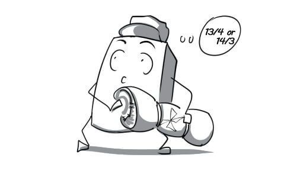
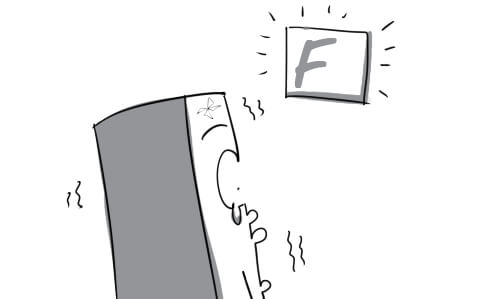

accurately: You should address the package accurately so that it will reach its destination without any problems.

carrier: With 5 Min Carrier, everything can be delivered in the shortest time.
catalog: Tom offers his customers a catalog so that they can choose a shipping service that best suits them.
fulfill: Our employees are always able to fulfill their missions however hard they are.

integral: Cars are integral to delivery men.

inventory: The director had a hard time finding a way to liquidate the large inventory.

minimize: The driver is supposed to find the best route to minimize the delivery time.
on hand: There are always some employees on hand to help customers.

remember: Tom remembered accurately the address of this package's destination.

ship: Andrew's friends had the present shipped to his house right on his birthday.
sufficiently: All the goods were delivered sufficiently to their receivers.
supply: We need large supply of toys for this Christmas season.

charge: Every customers are charged 10% of their purchase's value as VAT.
compile: The assistant has to compile a list of the names and addresses of customers.

customer: Lisa is a frequent customer of this store. She shops here twice a week.

discount: Mary was very happy when the cashier gave her a discount card to save 80% on every purchase.
efficient: This device is not as efficient as advertised on TV.
estimate: John is estimating the cost of groceries he has to buy for his party.

impose: Tom imposed his demand for an invoice from the cashier.

mistake: The customer is very angry because there is a big mistake on her invoice.

order: The long list of order made the sale manager really contented.

promptly: In spite of the traffic jam, Peter still managed to come to the meeting promtly.

rectify: The seller tries to rectify the invoice cleverly, he made a serious mistake.
terms: Tom must follow the company's terms when selling products.

adjustment: The shop manager make adjustment on the prices of some products to sell them faster.

automatically: The prices of old products will be automatically discounted when a new line is launched.

crucial: The director had to make a crucial decision about selling these products at a lower price.

discrepancy: There's a discrepancy between the quality of new products and that of old one.

disturb: The noise from outsite disturbed Tom when he was checking the selling numbers.
liability: Keeping the office clean is the liability of every staff member.
reflection: Peter always looks at his relection everytime he passes a mirror.
run: Mr Green can finally make his new TV run properly.

scan: Customers usually scan all products before deciding to buy something.
subtract: John decided to subtract the mouse from his purchases because he didn't have enough money.

tedious: Checking and viewing the inventory everyday is such a tedious job.
verify: ‘Who can verify that you weren’t at the warehouse last night?’ ‘My friend!’, Tom answers.
accept: Most stores in the US accept a credit card instead of cash.

balance: Peter was really shocked when he found out his credit card balance is zero.

borrow: Tom always borrows money from his friends without paying it back.
cautiously: The cashier check the bill cautiously to find out if it is fake or not.
deduct: VAT has been deducted from the payments.

dividend: Shareholders will receive their dividend from the company every quarter.

down payment: After paying the down payment on the house, Jack has no money left.

mortgage: You may need a mortgage if you want to buy a house.
restricted: Smoking is restricted at public places.

signature: The contract was complete with the customer signature.
take out: He can take out his money from all ATMs throughout Vietnam.

transaction: China has attained the top position in the world of annual gold transaction.

accounting: If you are really good at numbers, you should choose accounting as your career.
debt: Mr Morgan is heavily in debt after his company went bankrupt.

outstanding: Tom had to finish all his outstanding work before going to bed.

profitably: Mr Geller is very content with seeing his business grow profitably.

turnover: The CEO worries very much, the turnover of his business goes down this year.

aggressively: Mr Grant gets out of the room aggressively after the client denies his project.

attitude: The waiter is so scared by this customer who has a very bad attitude.

commit: The two parties were willing to commit themselves to this agreement.
conservative: The conservative director insists on using his outdated computer instead of a modern laptop.
fund: He donated a small amount of money to the Red Cross Fund.
invest: Apple is to invest a large amount of money in a new store in Brazil.
long-term: His long-term goal is to open a large store in the downtown.

portfolio: The chairman presented a new portfolio at the annual general meeting.

pull out: A big shareholder has just pulled out of the company, it causes many financial problems.

resource: We have to have sufficient resources if we want to sucess.
return: Although my business is quite small, it still produces great returns.

wisely: You need to use your money wisely if you want to succeed in business.

calculation: A calculator is very necessary for accountants to solve these calculations.
deadline: Jimmy has not finished his tax report although the deadline is tomorrow.

file: Jack prepared necessary documents to file a federal income tax return.

fill out: Adam finished filling out all the papers.

give up: The store finally gives up the taxes for the customers.

joint: The company has succeeded, thanked to the joint effort of everyone.
owe: Creditors are looking for Tom because he owes them a lot of money.
penalty: Paul was charged a penalty of $10,000 for taxes evading.
preparation: She is in preparation for the taxes report this month.

refund: You can have a refund of your money if you're not happy with your purchase.

spouse: Mrs Green can't stand her spouse anymore because he is so lazy.

withhold: After going shopping for groceries, the housemaid withheld some from the remaining money.
desire: The director desires that his company's turnover would increase by 70% in the next 6 months.

detail: The chairman details business results of the company in the past year.

forecast: Gold consumption is forecast to decrease because of the financial crisis.

level: High levels of bankruptcy are typical of a bad economy.
overall: The overall result of the wrong decision is that our company lost $200,000.

perspective: Having different perspective, two managers keep arguing.

project: The manager projects the cost of the next year plan.

realistic: He is very disappointed because the realistic result is worse than expected.

target: Our company targets primary students as the main source of consumer spending.

translation: The translation of Indian manager's speech into English was very clear and accurate.
typically: Typically, it takes at least $10,000 to start a business.

yield: This illegal company tries to blind Mr Tran with a giant annual yield.
adjacent: The IT department is adjacent to the design department.

collaboration: In collaboration, they move the heavy table easily.

concentrate: Tony concentrated all his mind on the report.

conductive: Silver is the most electrically conductive metal.

disruption: There has been so many disruptions while he's trying to finish his job.

hamper: His jealous colleague tried to hamper his work by hiding all the documents he needed.

inconsiderately: He inconsiderately sneezed at his boss at the meeting.

lobby: The lobby of Blueway is specially designed to create a pleasant and welcoming atmosphere.

move up: It is unbelievable that he could move up to the team leader position after just 2 years working here.

open to: The CEO position is open to competition from many co-workers.

opt: The manager will opt for the best employees to help him with this project.

scrutiny: All his work performance was placed under scrutiny.